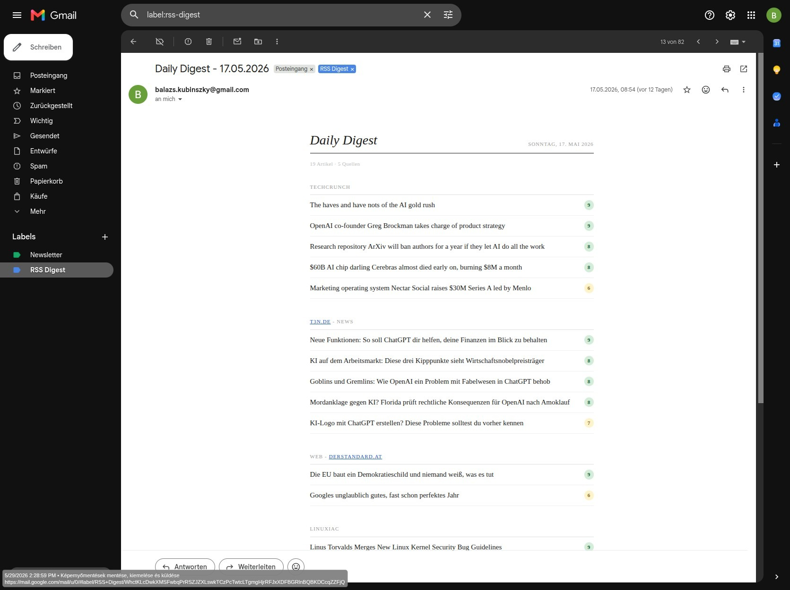

RSS Digest & KI-News-Zusammenfassung
Problemstellung & Ziel
Wir verbringen viel zu viel Zeit damit, für uns relevante Nachrichten aus der Flut an Informationen herauszufiltern. Ziel dieses Projekts war die Entwicklung eines autonomen Systems zur Aggregation einer Vielzahl von RSS-Feeds, zur inhaltlichen Bewertung anhand vordefinierter Kriterien sowie zur strukturierten Aufbereitung der wichtigsten Erkenntnisse.
- arrow_forward Laufende manuelle Sichtung der Quellen entfällt vollständig.
- arrow_forward Nur relevante Informationen statt Informationsüberlastung.
- arrow_forward More signal, less noise.
Zielsetzung
"Reduzierung der täglichen Recherchezeit bei gleichzeitiger Erhöhung der Informationstiefe durch LLM-gestützte Analyse. Fokus auf die relevantesten Artikel statt auf die manuelle Sichtung großer Informationsmengen."
Lösungsansatz & Workflow
Implementierung einer vollautomatischen, modularen News-Pipeline. Die Python-basierte Lösung wurde mit Claude Code unter Einhaltung verschiedener Security Best Practices aufgesetzt, so dass sensible Daten, Zugangsdaten, persönliche Präferenzen, usw. nicht veröffentlicht werden. Das Script kann an jede beliebige LLM API angebunden werden. Ich habe Gemini als Basis und Groq als Fallback verwendet, beide im Free-Tier-Bereich. Der Token-Verbrauch hängt von der Anzahl der Artikel und davon ab, ob KI-gestützte Zusammenfassungen auch gewünscht werden oder ein 'filtering & scoring' ausreicht. Details im Public GitHub Repository.
Technologien & Stack
Key Learnings
Architektur
Monolithischen Code früh in Module aufteilen zahlt sich bei späteren Änderungen aus.
Git
Sauberes Branching auch bei kleinen Projekten spart viel Mühe.
Mock Mode
Auch das großzügigste Free Tier ist beim Testen schnell aufgebraucht, deshalb von Anfang an mit Mock Mode arbeiten.
Security
Ein Security Audit durch ein zweites LLM am Ende war überraschend wertvoll und hat echte Findings gebracht.
Nutzen
Weniger ist mehr: v4 ohne Summaries ist schneller, günstiger, und in den meisten Fällen genauso nützlich wie v3 mit Summaries.
Screenshots & Interface

Erweiterungsoptionen & Überlegungen
Keyword watchlist
Bestimmte Begriffe (Firmenname, Technologie, Person) boosten den Score automatisch. Praktisch wenn man spezifische Themen eng verfolgen will.
Blacklist
Hard-Filter für bestimmte Themen per Blacklist einstellen.
Newsletter Integration
Datenquellen neben RSS-Kanälen mit Newslettern ergänzen (z.B. via Kill-the-Newsletter).
Personalisiertes Scoring
Statt einem globalen Interesse-Profil könnte man pro Feed unterschiedliche Gewichtungen setzen.
Feedback Loop
Einfache Like/Dislike Buttons pro Artikel in der Mail, der einen Score in einer lokalen Datei speichert. Über Zeit lernt das System die eigenen Präferenzen.
Weitere Output Kanäle
Telegram, Whatsapp, Slack, Teams u.ä. anstatt E-Mail Versand.
Lokale KI
LLM-APIs könnten durch eine lokale KI ersetzt werden.